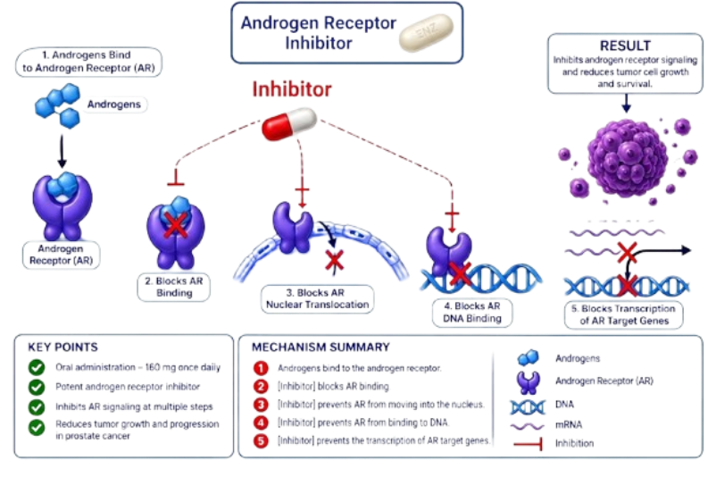

Janssen / Johnson & Johnson
Erleada (apalutamide) is an oral androgen receptor inhibitor used in the treatment of prostate cancer. It directly inhibits androgen receptor signaling by preventing androgen receptor activation, nuclear translocation, and transcriptional activity, thereby suppressing androgen-dependent prostate cancer growth.
Erleada
Apalutamide
Androgen Receptor Inhibitor
Oral
Janssen / Johnson & Johnson
Apalutamide is a selective androgen receptor inhibitor. It binds directly to the androgen receptor and inhibits androgen receptor activation, nuclear translocation, DNA binding, and transcription of androgen-responsive genes. This suppresses androgen receptor signaling and inhibits prostate cancer cell proliferation and survival.

| Trial | Setting | Outcome |
|---|---|---|
| SPARTAN | Non-Metastatic CRPC | Improved Metastasis-Free Survival |
| TITAN | Metastatic CSPC | Improved Overall Survival and Radiographic PFS |
Recommended dose: 240 mg orally once daily, with or without food.
| Recommended Dose | 240 mg Once Daily |
|---|---|
| Route | Oral |
| Schedule | Continuous Treatment |
| Administration | With or Without Food |